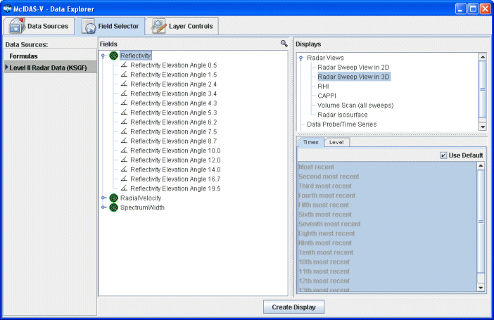

Creating a Display from a Directory
This section describes how to make a display using files located in a specific directory on your local file system.
The set of steps include:
Loading Files from a Directory
In the Data Explorer window select the General->Directory data source to view the Directory file chooser. For more information about this chooser, see Polling on files in a Directory.
- Select the directory you want to poll on.
- Type in a name for the dataset that you want to show in the Field Selector.
- Optionally, specify the type of data the URL contains by using the Data Source Type menu.
- Choose the number of files you want to to search for. You can select an absolute number of files that have been updated in a certain time period.
- When done, load the selected URL by clicking Add Source.
Creating the Display
The local image data source files will be shown in the Field Selector tab.

To create the display, proceed exactly as you would in the Field Selector if you had added data through one of the real-time data choosers. In this example, we have loaded Level II radar data.